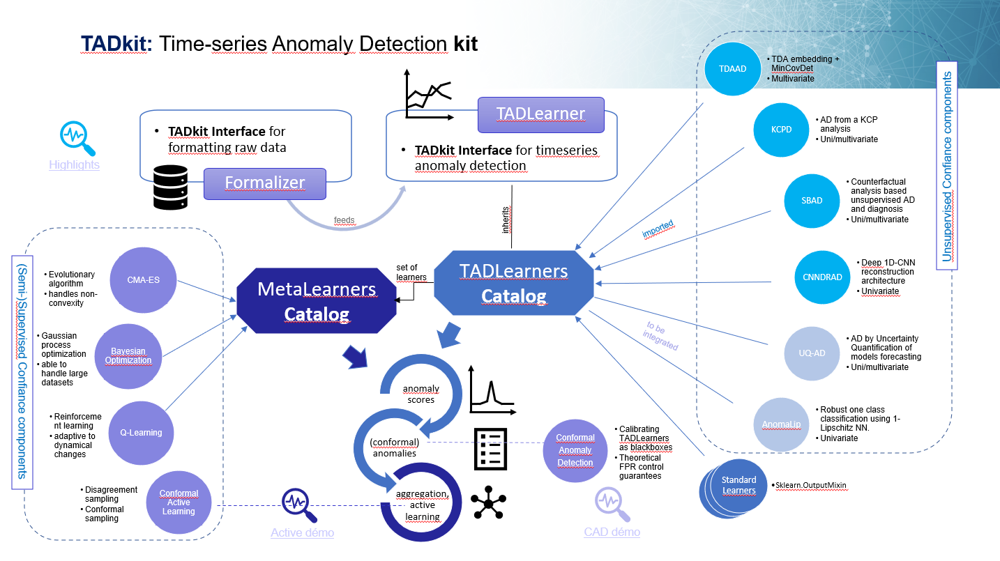

Welcome to tadkit’s documentation!

TADkit

TADkit: Time-series Anomaly Detection kit is a set of tools for anomaly detection of time series data.
The tadkit python package provides interfaces for anomaly detection that allows coherent and concurrent use of the various time-series anomaly detection methods developed in Confiance.ai (TDAAD, SBAD, KCPD, CNNDRAD, …). It also show how to use them for more elaborate purposes (e.g. active learning, conformal calibration with CAD, aggregation and optimisation with MetaTAD, …).
The interfaces for anomaly detection consist in a Formalizer abstract class for preparing raw data into machine-learning format,
and in a TADLearner abstract class implementing .fit(X), .score_samples(X) and .predict(X) routines for the unsupervised machine learning task of anomaly detection. We provide more details in the TADkit: Interfaces and Confiance methods catalog Section and in the docstring.
The time-series anomaly detection methods contained in TADkit are either from standard libraries such as scikit-learn, or are autonomous Confiance.ai components. They are made available through the component as a dictionary of classes from tadkit.catalog.learners import installed_learner_classes, to be instantiated with the right parameters - and all parameters come with default values.
The package has been designed with the following philosophy:
if installed, the relevant Confiance.ai anomaly detection components are imported and made ready to use as a
TADLearner,else the component will simply not appear in the tadkit installed learner set.
We provide more details in the Tadkit Anomaly Detection Confiance Methods Section
The tadkit python package contains multiple introductory or example notebooks using these interfaces and methods, for crafting a unique univariate anomaly detection method, using and chosing anomaly detectors concurrently.
The following scheme represents the TADkit “galaxy” as it stands currently.
 An imported arrows means that the external Confiance.ai component will be found in TADkit if installed, and a to be integrated arrow means that that Confiance.ai component cannot be found through TADkit yet, awaiting further developments.
Contents: